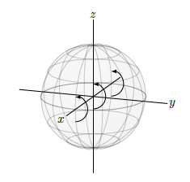
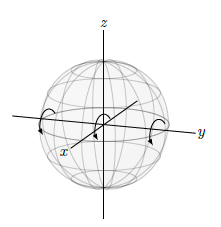
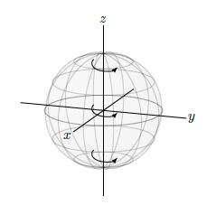
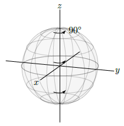
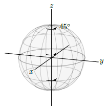
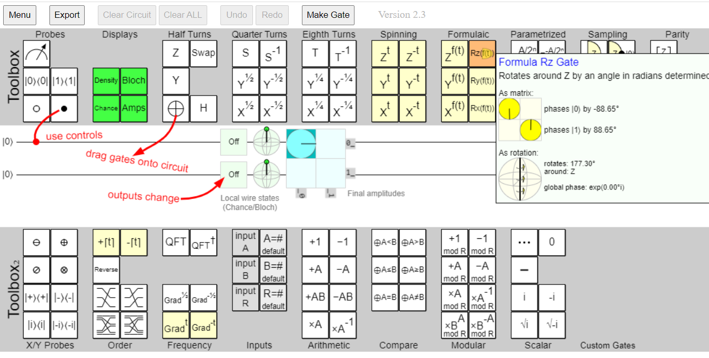
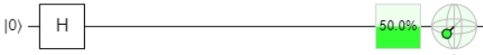
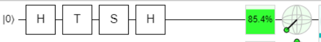

4. Introducción#
En el mundo de la programación tradicional, las puertas lógicas actúan sobre los bits. Un panorama similar existe en el mundo de la programación cuántica, de tal manera que en este caso las puertas cuánticas actúan sobre los qubits. De estas puertas cuánticas nos ocuparemos en esta sección.
Una puerta cuántica, lo que hace es transformar el estado de un qubit en otro estado. Para denotar estas puertas cuánticas, vamos a utilizar la notación de U (inical de unitary). A continuación de muestra un ejemplo de este tipo de transformaciones:
Una puerta cuántica, debe tener la propiedad de linealidad, es decir debe cumplir los siguiente:
Mas aún, el resultado debe ser un nuevo estado cuántico válido, es decir que las sumas de las probabilidades debe ser 1. Entonces, en el ejemplo anterior y suponiendo que el estado cuántico de inicio está normalizado, se tendrá que \(|\alpha|^{2}+|\beta|^{2}=1\), entonces se tendrá lo siguiente:
En este ejemplo podemos designar una matriz U, representativa de esta transformación de la siguiente manera:
Y realmente la transformación anterior, en formato matricial sería la siguiente:
Y entonces, en base al resultado anterior, ahora ya sí se puede decir que U es una puerta cuántica válida. Por lo tanto
Note
Las puerta cuánticas son transformaciones lineales con las que se obtiene otros estado normalizado y válido (La suma de los módulos de sus amplitudes al cuadrado es igual a 1)
De forma general diremos que U es una matriz unitaria, siempre que su matriz adjunta que denotamos por \(U^\dagger\) y que es la matriz transpuesta conjugada de U verifique que:
Veamos que esto se cumple para el ejemplo anterior:
En Python utilizamos el módulo numpy para implementar estos procedimientos. Lo haremos de las siguiente manera
import numpy as np
# Definimos la matriz
U= np.matrix(
[[complex(np.sqrt(2)/2,-1/2),1/2],
[-1/2,complex(np.sqrt(2)/2,1/2)]]
)
U
matrix([[ 0.70710678-0.5j, 0.5 +0.j ],
[-0.5 +0.j , 0.70710678+0.5j]])
La matriz transpuesta conjugada sería en esta caso la siguiente:
U.getH()
matrix([[ 0.70710678+0.5j, -0.5 -0.j ],
[ 0.5 -0.j , 0.70710678-0.5j]])
Y el producto de las dos matrices sería la siguiente
np.matmul(U,U.getH())
matrix([[1.+0.j, 0.+0.j],
[0.+0.j, 1.+0.j]])
Con qiskit también podemos comprobar si una matriz es unitaria o no. Primero la matriz la pasamos a un objeto de tipo Operator , y después utilizamos el método is_unitary() para hacer la comprobación. Devuelve True si lo es y False en caso contrario.
from qiskit.quantum_info import Operator
U1 = Operator(U)
Operator.is_unitary(U1)
True
Una de la propiedades que tienen este tipo de matrices es que la composición de mas de una matriz unitaria, también es unitaria. En efecto supongamos que U y V son unitarias, entonces se tiene que: $\( \left(UV\right)^{\dagger}=V^{\dagger}U^{\dagger}=V^{-1}U^{-1}=\left(UV\right)^{-1} \)$
Algunas propiedades de las matrices unitarias son las siguientes:
Las filas de U forman una base ortonormal.
Las columnas de U forman una base ortonormal
Los vectores propios de U tienen la forma \(e^{i\theta}\)
U puede ser diagonalizada de la siguiente manera: $\(U=\left(\begin{array}{cccc} e^{i\theta_{1}} & 0 & ... & 0\\ 0 & \ddots & \ddots & 0\\ \vdots & \ddots & \ddots & 0\\ 0 & \cdots & 0 & e^{i\theta_{d}} \end{array}\right)\)$
4.1. Puertas lógicas clásicas reversibles.#
Diremos que una puerta lógica clásica es reversible si los outputs son únicos. Por ejemplo dao un input A y un output B con las siguiente tabla de la verdad diremos que esa puerta lógica es reversible, ya que siempre podemos determinar el input para cualquier valor del output
A |
B |
|---|---|
1 |
0 |
0 |
1 |
Cómo actuaría esta puerta sobre un qubit?. Podría ser de la siguiente manera:
\(Puerta|0\rangle = |1\rangle\)
\(Puerta|1\rangle = |0\rangle\)
Entonces si tenemos un qubit en un estado de superposición y normalizado :
\( puerta(\alpha|0\rangle + \beta |1\rangle) = \alpha |1\rangle + \beta |0\rangle = \beta |0\rangle + \alpha |1\rangle \)
Y el nuevo estado obtenido también nos da un qubit normalizado. POr lo tanto se tiene lo siguiente:
Note
Las puertas lógica reversibles clásicas son puertas cuánticas válidas
4.2. Puertas cuánticas muy comunes sobre un qubit#
Existen una serie de puertas cuánticas muy utilizadas, dentro de la programación cuántica. A continuación se pasan a su presentación:
4.2.1. Puerta cuántica identidad.#
Esta puerta cuántica deja en el mismo estado los cubits iniciales. Es decir:
\( I|0\rangle = |0\rangle \)
\( I|1\rangle = |1\rangle \)
4.2.2. La puerta de Pauli X-Gate.#
Esta es puerta también es conocida como puerta NOR y transforma \(|0\rangle\) en \(|1\rangle \) y \(|1\rangle\) en \( |0\rangle \). Sobre la esfera de Bloch se puede decir que coincide con una rotación sobre el eje X de 180 grados:

La matriz que define esta puerta es la siguiente:
Desde un punto de vista geométrico y con la base que nos puede dar la figura anterior, se puede decir fácilmente que la puerta X hace que el polo norte \(|0\rangle\) rota al polo sur \(|1\rangle\) y viceversa. Lo mismo ocurre con los elementos \(|i\rangle\) y \(|-i\rangle\), sin embargo los qubits \(|+\rangle\) y \(|-\rangle\) no cambian (salvo claro está una determinada fase global).
Tener en cuenta que si aplicamos la puerta X dos veces entonces se vuelve a la situación original y por lo tanto \(X^2=I\). Esta propiedad, la podemos aplicar de forma reiterada la puerta X y entonces si la aplicamos un número impar se tiene:
4.2.3. La puerta de Pauli Y-Gate.#
Esta puerta transforma \(|0\rangle\) en \(i|1\rangle\) y \(|1\rangle\) en \(-i|0\rangle\), es decir:
La matriz unitaria es la siguiente:
Comprobemos que es una puerta cuántica válida haciendo que actúe sobre un determinado estado de superposición:
La probabilidad total en este caso es la siguiente:
Comprobemos esto último utilizando para ello qiskit
from qiskit.quantum_info import Operator
U = U= np.matrix(
[[0,complex(0,-1)],
[complex(0,1),0]]
)
U1 = Operator(U)
Operator.is_unitary(U1)
True
Sobre la esfera de Bloch, el efecto que se produce es una rotación sobre el eje Y de 180 grados, como se puede ver en la siguiente figura

Tal y como sugiere la imagen anterior, si aplicamos esta puerta cuántica dos veces volvemos a la situación inicial (salvo una determinada fase global). Por lo tanto se tiene que \(Y^2=I\)
4.2.4. La puerta de Pauli Z#
La puerta de Pauli transforma \(|0\rangle\) en \(|0\rangle\) y \(|1\rangle\) en \(-|1\rangle\)
La matriz unitaria que rige esta puerta es la siguiente:
Sobre la esfera de Bloch, esta puerta se puede ver como una rotación de 180 grados sobre el eje Z

4.2.5. Phase gate.#
Esta puerta de denota por S y es la raíz cuadrada de la puerta Z, y por lo tanto \(S^2 = Z\)
La matriz unitaria es la siguiente:
Desde un punto de vista geométrico, se puede decir que esta puerta es un giro de 90 grados alrededor del eje z

A continuación comprobamos con código python que la matriz asociada a esta cuenta es unitaria.
from qiskit.quantum_info import Operator
import numpy as np
import cmath
U = U= np.matrix(
[[1,0],
[0,cmath.exp(complex(0,np.pi/2))]]
)
U1 = Operator(U)
Operator.is_unitary(U1)
True
4.2.6. Puerta T.#
Esta puerta también es conocida como puerta \(\pi/8\) y es la raíz cuadrada de S, y por lo tanto \(T^2=S\). Se cumple por lo tanto que:
Sobre la esfera de Bloch esta puerta representa un giro de 45 grados sobre el eje Z.

NOTA: esta dos últimas puertas son dos casos especiales de una puerta genérica denominada $R_{z}(\theta), que queda definida de la siguiente manera:
Y lo que representa es un giro de \(\theta\) grados sobre el eje z.
4.2.7. Puerta de Hadamard#
Esta puerta es muy utilizada en programación cuántica y transforma \(|0\rangle\) en \(|+\rangle\) y \(|1\rangle\) en \(|-\rangle\), es decir:
La matriz unitaria que define a esta puerta es la siguiente:
Sobre la esfera de Bloch, esta puerta queda representada por un giro de 180 grados al rededor del eje x+y

De forma similar se puede demostrar que \( H|-\rangle=|1\rangle. \)
También se cumple:
Igualmente se cumple : \( H|-i\rangle=e^{-i\pi/2}|i\rangle\equiv|i\rangle. \)
Podemos combinar estas puertas cuánticas para crear otros muchos estados. Por ejemplo:
Donde en la tercera línea se ha usado que \( i e^{i\pi/4}=e^{i\pi/2}e^{i\pi/4}=e^{i3\pi/4}. \)
Vamos a calcular la probabilidades de colapsar hacia los estados de las base. Primero hacia el estado \(|0\rangle\).
(0.5*abs(1+cmath.exp(complex(0,(3/4)*np.pi))))**2
0.1464466094067263
Ahora hacia el esatado \(|1\rangle\)
(0.5*abs(1-cmath.exp(complex(0,(3/4)*np.pi))))**2
0.8535533905932737
De una manera manual esta comprobación se haría de la siguiente manera:
Para ir de la segunda a la tercera línea, se ha usado la fórmula de Euler que dice: \(e^{i\theta}+e^{-i\theta}=2\cdot cos(\theta)\). Similarmente la probabilidad de colapsar a \(|1\rangle\):
4.2.8. Puerta general sobre un qubit#
Como se ha podido comprobar todas las puertas cuánticas vistas, lo que hacen es una rotación sobre algunos de los ejes. Este es un comportamiento general.
Esto es así porque las rotaciones alrededor de la esfera de Bloch las dos propiedades que se requieren para una puerta cuántica: son transformaciones lineales y mantienen la suma de las probabilidades de colapsar a los estados de la base igual a 1.
Desde un punto de vista matemático,digamos que queremos rotar un ángulo \(\theta\) sobre algún eje de rotación, y que puede ser especificado en términos de los ejes x, y ó z.Vamos a denotar la dirección del eje x por \(\hat{x}\), la dirección del eje y por \(\hat{y}\) y la del eje z por \(\hat{z}\). Entonces denotamos el eje de rotación por \(\hat{n}\) y se tiene que :
Tener en cuenta que \( \hat{n}\) debe ser un vector unitario es decir debe cumplir: \(n_x^2+n_y^2+n_x^2=1\).
Por ejemplo la puerta de Hadamard es una rotación de \( \theta = 180º =\pi\) alrededor de los ejes x e y, y por lo tanto lo podemos expresar de la siguiente manera:
Se puede demostrar que una rotación de un ángulo \(\theta\) alrededor de un eje \(\hat{n}=(n_x,n_y,n_z)\) puede ser escrito en término de las matrices I, X, Y, Z de la siguiente manera:
donde \(\gamma\) es una fase global que puede ser olvidada (o borrada), puesto que no tiene ninguna relevancia física.
Siguiendo con el ejemplo de una puerta de Hadamard, con \(\theta=\pi\) y \(\hat{n}=(1/\sqrt{2},0,1/\sqrt{2})\) tendremos que:
Para comprobar que U es la puerta de Hadamard, veamos cómo actúa sobre \(|0\rangle\) y \(|1\rangle\).
Podemos olvidarnos de la fase global \(-ie^{i \gamma}\) y entonces \(U|0\rangle=|+\rangle\) y \(U|1\rangle = |-\rangle\), y por lo tanto queda demostrado que es la puerta de Hadamard
4.3. Dibujar circuitos cuánticos.#
Al igual que se hace en la programación cuántica, donde se pueden dibijar esquemas de puertas lógicas, también en progamación cuántica se puede hacer algo similar, y en concreto utilizando qiskit se pueden representar las secuencias de puertas lógicas que constituyen el circuito en el que se basa el programa cuántico que queramos desarrollar.
Se puede utilizar matplotlib de python para representar este tipo de esquemas, por ejemplo si queremos representar la secuencia siguiente de puertas cuánticas \(ZSH|0\rangle\) , lo podrímos hacer de la siguiente manera:
from qiskit import QuantumCircuit
circuit = QuantumCircuit(1)
circuit.h(0)
circuit.s(0)
circuit.z(0)
circuit.draw('mpl', initial_state=True)
Estos circuitos se tienen leer de izquierda a derecha, tal y como ocurre en los circuitos clásicos. En este sentido y para el ejemplo anterior, se comienza con un qubit simple \(|o\rangle\) y se aplica una puerta de Hadamrt H, seguida de otra puerta de tipo S para finalmente aplicar una puerta Z.
Existen muchas más opciones para representar este tipo de fenómenos con qiskit, por lo que a continuación abrimos un nuevo apartado centrado en este aspecto.
4.3.1. Visualizando circuitos cuánticos con qiskit#
Lo primero que vamos a hacer es cargar los paquetes necesarios para el correcto desarrollo de los códigos que vamos a utilizar.
from qiskit import QuantumCircuit, ClassicalRegister, QuantumRegister
Para entender mejor un circuito cuántico en muchas ocasiones ayuda mucho tener una representación gráfica del mismo, para poder hacer esto qiskit nos ofrece el objeto QuantumCircuit. Entonces una vez construido el circuito, podemos obtener una imagen del mismo bien con la instrucción print() de python o bien utilizando el método draw(). Veamos esto con un ejemplo:
# Construimos el siguiente circuito
circuit = QuantumCircuit(3, 3)
#Añadimos una puerta x
circuit.x(1)
#Añadimos una puerta h
circuit.h(range(3))
# ahora un puerta cx
circuit.cx(0, 1)
# hacemos una medición del circuito
circuit.measure(range(3), range(3));
# Dibujamos el circuito anterior
print(circuit)
┌───┐ ┌─┐
q_0: ┤ H ├───────■──┤M├───
├───┤┌───┐┌─┴─┐└╥┘┌─┐
q_1: ┤ X ├┤ H ├┤ X ├─╫─┤M├
├───┤└┬─┬┘└───┘ ║ └╥┘
q_2: ┤ H ├─┤M├───────╫──╫─
└───┘ └╥┘ ║ ║
c: 3/═══════╩════════╩══╩═
2 0 1
# Conseguimos lo mismo d ela siguiente manera
circuit.draw()
┌───┐ ┌─┐
q_0: ┤ H ├───────■──┤M├───
├───┤┌───┐┌─┴─┐└╥┘┌─┐
q_1: ┤ X ├┤ H ├┤ X ├─╫─┤M├
├───┤└┬─┬┘└───┘ ║ └╥┘
q_2: ┤ H ├─┤M├───────╫──╫─
└───┘ └╥┘ ║ ║
c: 3/═══════╩════════╩══╩═
2 0 1 Como podemos ver, la figura que obtenemos no es estéticamente hablando muy estética, mas bien, todo lo contrario. No obstante existen alternativas para mejorar sustancialmente esta presentación.
En este sentido existen dos tipos de randerizado para este tipo de presentación:
Utilizando matplotlib
Utilizando LaTeX, pero en este caso se necesita tener instalado el paquete de LaTeX denominado qcircuit para poder obtener el resultado deseado
Estas herramientas se pueden indicar que sean utilizadas, empleando para ello lo valores mpl y latex para el parámetro output del método draw(). Por ejemplo el circuito anterior se podría presentar como una figura de matplotlib de la siguiente manera:
# figura utilizando Matplotlib
circuit.draw(output='mpl', initial_state=True)
Para la salida utilizando formato latex, se necesita tener instalado el paquete de latex denominado qcircuit. Como para este trabajo no se tiene instalado este paquete, se indica la instrucción a utilizar para conseguir esto, pero con la misma comentada para que no sea ejecutada por parte de python.
#circuit.draw(output='latex')
Igualmente se puede obtener el código latex con el que se podría dibujar el circuito en cualquier documento escrito en este lenguaje:
circuit.draw('latex_source')
'\\documentclass[border=2px]{standalone}\n\n\\usepackage[braket, qm]{qcircuit}\n\\usepackage{graphicx}\n\n\\begin{document}\n\\scalebox{1.0}{\n\\Qcircuit @C=1.0em @R=0.2em @!R { \\\\\n\t \t\\nghost{{q}_{0} : } & \\lstick{{q}_{0} : } & \\gate{\\mathrm{H}} & \\qw & \\ctrl{1} & \\meter & \\qw & \\qw & \\qw\\\\\n\t \t\\nghost{{q}_{1} : } & \\lstick{{q}_{1} : } & \\gate{\\mathrm{X}} & \\gate{\\mathrm{H}} & \\targ & \\qw & \\meter & \\qw & \\qw\\\\\n\t \t\\nghost{{q}_{2} : } & \\lstick{{q}_{2} : } & \\gate{\\mathrm{H}} & \\meter & \\qw & \\qw & \\qw & \\qw & \\qw\\\\\n\t \t\\nghost{\\mathrm{{c} : }} & \\lstick{\\mathrm{{c} : }} & \\lstick{/_{_{3}}} \\cw & \\dstick{_{_{\\hspace{0.0em}2}}} \\cw \\ar @{<=} [-1,0] & \\cw & \\dstick{_{_{\\hspace{0.0em}0}}} \\cw \\ar @{<=} [-3,0] & \\dstick{_{_{\\hspace{0.0em}1}}} \\cw \\ar @{<=} [-2,0] & \\cw & \\cw\\\\\n\\\\ }}\n\\end{document}'
Para una mejor interpretación del resultado latex obtenido, lo mejor es utilizar la función print().
print(circuit.draw('latex_source'))
\documentclass[border=2px]{standalone}
\usepackage[braket, qm]{qcircuit}
\usepackage{graphicx}
\begin{document}
\scalebox{1.0}{
\Qcircuit @C=1.0em @R=0.2em @!R { \\
\nghost{{q}_{0} : } & \lstick{{q}_{0} : } & \gate{\mathrm{H}} & \qw & \ctrl{1} & \meter & \qw & \qw & \qw\\
\nghost{{q}_{1} : } & \lstick{{q}_{1} : } & \gate{\mathrm{X}} & \gate{\mathrm{H}} & \targ & \qw & \meter & \qw & \qw\\
\nghost{{q}_{2} : } & \lstick{{q}_{2} : } & \gate{\mathrm{H}} & \meter & \qw & \qw & \qw & \qw & \qw\\
\nghost{\mathrm{{c} : }} & \lstick{\mathrm{{c} : }} & \lstick{/_{_{3}}} \cw & \dstick{_{_{\hspace{0.0em}2}}} \cw \ar @{<=} [-1,0] & \cw & \dstick{_{_{\hspace{0.0em}0}}} \cw \ar @{<=} [-3,0] & \dstick{_{_{\hspace{0.0em}1}}} \cw \ar @{<=} [-2,0] & \cw & \cw\\
\\ }}
\end{document}
4.3.2. Personalizar la salida#
Dependiendo de la salida que queramos obtener también hay opciones para personalizar el formato de la figura de salida deseada.
A continuación se muestra un ejemplo en el que se invierte el orden de colocación de los bits
q_a = QuantumRegister(3, name='qa')
q_b = QuantumRegister(5, name='qb')
c_a = ClassicalRegister(3)
c_b = ClassicalRegister(5)
circuit = QuantumCircuit(q_a, q_b, c_a, c_b)
circuit.x(q_a[1])
circuit.x(q_b[1])
circuit.x(q_b[2])
circuit.x(q_b[4])
circuit.barrier()
circuit.h(q_a)
circuit.barrier(q_a)
circuit.h(q_b)
circuit.cswap(q_b[0], q_b[1], q_b[2])
circuit.cswap(q_b[2], q_b[3], q_b[4])
circuit.cswap(q_b[3], q_b[4], q_b[0])
circuit.barrier(q_b)
circuit.measure(q_a, c_a)
circuit.measure(q_b, c_b);
circuit.draw(output='mpl')
# Ahora invertimos la colocación de los bits
circuit.draw(output='mpl', reverse_bits=True)
Igualmente se pueden eliminar las barraras mostradas en el ejemplo anterior
circuit.draw(output='mpl', plot_barriers=False, reverse_bits=True)
4.3.3. Personalización de la salida.#
Existen muchas opciones que se pueden utilizar para personalizar nuestra salida. Todas estas posibilidades se pueden ver en este enlace .
Algunas de estas opciones las podemos ver en los siguientes ejemplos.
circuit.draw(output='text')
░ ┌───┐ ░ ┌─┐
qa_0: ──────░─┤ H ├─░────┤M├───────────────────────────
┌───┐ ░ ├───┤ ░ └╥┘┌─┐
qa_1: ┤ X ├─░─┤ H ├─░─────╫─┤M├────────────────────────
└───┘ ░ ├───┤ ░ ║ └╥┘┌─┐
qa_2: ──────░─┤ H ├─░─────╫──╫─┤M├─────────────────────
░ ├───┤ ░ ║ ║ └╥┘ ░ ┌─┐
qb_0: ──────░─┤ H ├─■─────╫──╫──╫──X──░─┤M├────────────
┌───┐ ░ ├───┤ │ ║ ║ ║ │ ░ └╥┘┌─┐
qb_1: ┤ X ├─░─┤ H ├─X─────╫──╫──╫──┼──░──╫─┤M├─────────
├───┤ ░ ├───┤ │ ║ ║ ║ │ ░ ║ └╥┘┌─┐
qb_2: ┤ X ├─░─┤ H ├─X──■──╫──╫──╫──┼──░──╫──╫─┤M├──────
└───┘ ░ ├───┤ │ ║ ║ ║ │ ░ ║ ║ └╥┘┌─┐
qb_3: ──────░─┤ H ├────X──╫──╫──╫──■──░──╫──╫──╫─┤M├───
┌───┐ ░ ├───┤ │ ║ ║ ║ │ ░ ║ ║ ║ └╥┘┌─┐
qb_4: ┤ X ├─░─┤ H ├────X──╫──╫──╫──X──░──╫──╫──╫──╫─┤M├
└───┘ ░ └───┘ ║ ║ ║ ░ ║ ║ ║ ║ └╥┘
c0: 3/════════════════════╩══╩══╩════════╬══╬══╬══╬══╬═
0 1 2 ║ ║ ║ ║ ║
c1: 5/═══════════════════════════════════╩══╩══╩══╩══╩═
0 1 2 3 4 style = {'backgroundcolor': 'lightgreen'}
circuit.draw(output='mpl', style=style)
circuit.draw(output='mpl', scale=0.5)
4.3.4. La función circuit_drawer().#
Existe una función dentro de qiskit que nos permite dibujar de forma autónoma con el circuito con el que estamos trabajando, dicha función se denomina circuit_drawer() y podemos ver todas sus propiedades en este enlace . Esta función tiene un comportamiento idéntico al que hemos visto anteriormente y forma parte de la interfaz pública qiskit.tools.visualization.
from qiskit.tools.visualization import circuit_drawer
circuit_drawer(circuit, output='mpl', plot_barriers=False)
4.3.5. Visualización con quirk .#
Existe otra manera de poder implementar los circuitos cuánticos, y además de una forma más intuitiva que la que ofrece qiskit. Esta herramienta se denomina quirk y se puede acceder a la misma a traves de este enlace: https://algassert.com/quirk . La imagen que nos muestra nada más entrar en la siguiente:
k Dentro de esta aplicación ewb, existe una amplia variedad de puertas cuánticas que el usuario puede utilizar simplemente arrastrándolas hacia la zona donde se definen los circuitos cuánticos. Todos los qubits están inicializados a \(|0\rangle\).
El cuadradtito verde que hay a la izquierda de la esfera nos mide la probabilidad de que el qubit colapse al estado \(|1\rangle\). Como por defecto el qubit inicial esta en estado \(|0\rangle\), aparece dentro de él la expresión off. Si ahora llevamos al panel de circuitos la puerta X (indicado por el ´simbolo \(\oplus\) )podremos observar que la posición ha cambiado al estado \(|1\rangle\) y que la probabilidad de colapsar al estado \(|1\rangle\) ahora ha cambiado a 1 y el botón ahora tiene la inscripción “on”.
Apliquemos ahora una puerta H, y el resultado será el que se muestra en la siguiente figura:

Es decir el resultado es el esperado, pues la probabilidad de colapsar hacia cada elemento de la base es del 50%. Finalmente, apliquemos la siguiente secuencia de puertas lógicas: \(HSTH|0\rangle\) que como hemos visto en un apartado anterior se obtiene una probabilidad de colapsar hacia \(|1\rangle\) de 0.854. Aplicando esta composición en quirk, obtenemos lo siguiente:

Y efectivamente, con quirk obtenemos directamente que la probabilidad de colapsar hacia el estado \(|1\rangle\) es 85.4% = 0.854, exactamente como lo que hemos obtenido en nuestro cálculo manual